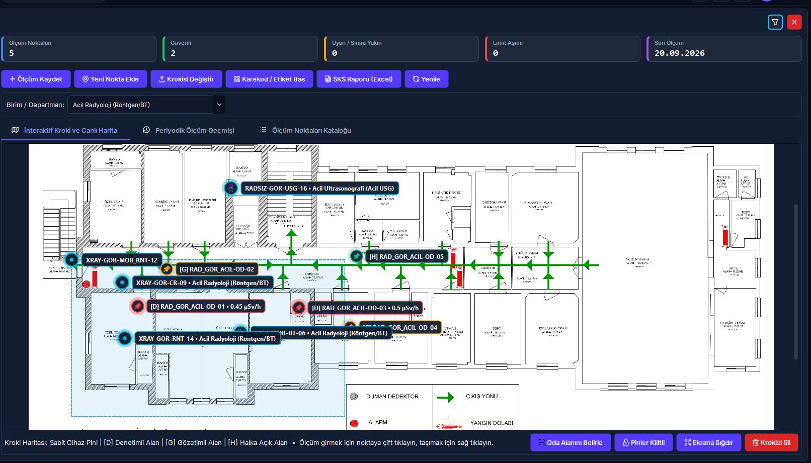
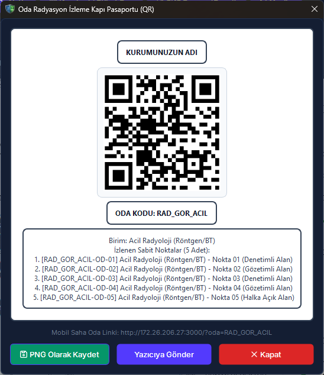

14. Ortam Dozu ve Kroki Haritası
Kurumun mimari kat planları (vektörel PDF veya yüksek çözünürlüklü görsel) üzerinde radyasyon izleme noktalarını ve sabit cihaz konumlarını canlı pinler halinde haritalandıran, periyodik saçılma dozu ölçümlerini kaydeden, yasal eşik kontrollerini otomatik denetleyen, limit aşımında anında DÖF başlatan ve kapı QR pasaport etiketleri üreten modüldür.
Vizyonder Hızlı Karar Reçetesi (Ortam Dozu & RKS Özeti)
Vektörel PDF veya yüksek çözünürlüklü krokiyi yükleyin. Denetimli ve gözetimli alan sınıflarına göre izleme noktalarını haritaya iğneleyin.
Yalnızca kalibrasyonu geçerli survey meter ile ölçüm yapın (RED-02). Sistem girilen değeri alan eşiğiyle kıyaslayıp anında yeşil/sarı/kırmızı renklendirir.
Radyasyon kapısına yapıştırılan QR kod ile mobilden ölçüm yapın. Limit aşımı tespit edildiğinde sistem ilgili birime anında otomatik DÖF başlatır.
Arayüz Bileşenleri ve 5N1K Tablosu
Ortam Dozu ve Kroki Haritası modülündeki ekran kontrolleri, butonlar ve harita eylemlerinin işlevsel kullanım matrisi:
İnteraktif Kroki Tuvali ve Canlı Harita
Radyasyon alanlarının canlı harita üzerinde yönetimi, çok katmanlı görselleştirme ve pürüzsüz gezinme özellikleri:

Pürüzsüz Yakınlaşma (Zoom)
Fare tekerleğini ileri çevirerek imlecin bulunduğu odaya yüksek çözünürlükte yakınlaşabilir, geri çevirerek tüm kat planına dönebilirsiniz.
Serbest Gezinme (Pan)
Sol fare tuşunu basılı tutup sürükleyerek (ScrollHandDrag) harita tuvalinde kaydırma çubuklarına gerek kalmadan akıcı şekilde dolaşabilirsiniz.
Sabit Cihaz Pinleri
BT, Skopi, X-Ray veya LINAC cihazları kendilerine ait SVG modalite simgeleriyle harita üzerinde sabitlenir; oda numarası ve künyesi gösterilir.
NDK Alan Sınıfları ve Yasal Doz Eşikleri
NDK RSGD-KLV-005 kılavuzuna göre üç temel alan sınıfı ve otomatik alarm eşikleri:
X-ışını tüpünün bulunduğu çekim odaları, zırhlı tedavi odaları ve sıcak laboratuvarlar.
Denetimli alana bitişik teknisyen kumanda odası, kurşun cam arkası ve hazırlık mahalli.
Hasta bekleme salonları, servis koridorları, hekim odaları ve meskenler.
Doz Ölçümü Kaydetme ve Kalibrasyon Emniyeti (RED-02)
Periyodik ölçüm giriş adımları ve kalibrasyon kontrolü emniyet mekanizması:
- Üst araç çubuğundaki [Ölçüm Kaydet] butonuna tıklayın veya harita üzerindeki ilgili ölçüm noktası pinine çift tıklayın.
- Açılan pencerede Ölçüm Noktası, Ölçüm Tarihi, ölçülen Doz Hızı (µSv/h) ve Doğal Arka Plan değerlerini girin.
- Kullanılan ölçüm aletinin marka, model ve seri numarasını yazın; ölçümü yapan personeli seçin.
- Kalibrasyon Emniyet Kilidi (RED-02): Sistem, kullanılan cihazın veritabanında kayıtlı kalibrasyon süresini kontrol eder. Kalibrasyon süresi dolmuşsa sistem ölçüm kaydını emniyet kilidiyle reddeder:
HATA: Kullanılan ölçüm cihazının kalibrasyon geçerlilik süresi dolmuştur. NDK ve SKS kalite standartları gereğince kalibrasyonu geçmiş cihazla resmi ölçüm kaydedilemez.
- Bilgiler eksiksiz ise [Ölçümü Kaydet] butonuna basarak işlemi tamamlayın.
Limit Aşımı Alarmı ve Otomatik DÖF Entegrasyonu
Doz limitleri aşıldığında sistemin devreye soktuğu otomatik güvenlik ve kalite mekanizması:
Otomatik Olay Bildirimi
Ölçülen doz değeri ilgili noktanın limit eşiğini aştığı anda sistem arka planda Olay Bildirimi (Modül 15) modülüne otomatik kayıt oluşturur:
- Olay Tanımı: Nokta kodu, ölçülen doz ve yasal limit bilgisi.
- Olay Sonucu: "Orta Zarar" olarak derecelendirilir.
- Acil Müdahale: "Girişler sınırlandırıldı, zırhlama kontrolü başlatıldı."
- NDK Bildirim Bayrağı: Doz limitin 3 katını aşarsa zorunlu kılınır.
Otomatik DÖF Ataması
Sistem yalnızca olay kaydı açmakla kalmaz; kalite yönetim süreci uyarınca sorumlu personele doğrudan düzeltici işlem görevi yükler:
- Faaliyet Tipi: "Düzeltici Önleyici Faaliyet (DÖF)"
- Açıklama: "Ortam dozu limit aşımı zırhlama ve sızıntı incelemesi"
- Sorumlu: Ölçümü yapan personel veya RKS sorumlusu
- DÖF Kapatma Kilidi: Sorun giderilip DÖF kapatılana dek olay açık kalır.
Karekod (QR) Pasaport Etiketi ve SKS Excel Raporu
Fiziksel kapı/nokta levhalandırması ve Sağlık Bakanlığı kalite denetim çıktısı:

Oda Kapı QR Pasaportu
Üstteki [Karekod / Etiket Bas] butonuna tıklayıp Oda Kapı Karekod Etiketi Bas seçeneğini belirleyin. Çıktı alınan etiket radyasyon odasının giriş kapısına yapıştırılır. Termal etiket yazıcıdan anında yazdırılabilir veya PNG olarak dışa aktarılabilir.
SKS 6.1 Resmi Excel Denetim Raporu
[SKS Raporu (Excel)] butonuna basıldığında sistem; kurum antetini, birim adını, ölçüm noktası kodlarını, alan sınıflarını, ölçüm tarihlerini, ölçülen dozları ve eşikleri içeren, limit aşımını kırmızı, uyarıları sarı renkle vurgulayan resmi Excel raporunu (.xlsx) üretir.
Hibrit Saha Tablet Akışı ve Web Portalı
Masaüstü yönetim kokpiti ile mobil saha uygulamasının çift yönlü senkronizasyonu:
1. Masaüstü Yönetim Merkezi (PySide6)
Kat planı PDF dosyalarının yüklendiği, oda sınırlarının çizildiği, sabit cihazların konumlandırıldığı, yasal eşik limitlerinin belirlendiği, pin kilitlerinin açılıp kapandığı ve resmi denetim Excel raporlarının alındığı ana merkezdir.
2. Saha Mobil Portalı (Tablet / Telefon)
Saha teknisyeni kapıdaki QR kodu tablet kamerasıyla okutur; ekranda odaya ait zırhlı kroki ve ölçüm noktaları listelenir. Teknisyen cihazdan okuduğu dozu doğrudan sahada girer; veri anında masaüstü sistemine ve web analitik paneline yansır.
Karar Akış Şeması
Ortam dozu ölçümü, eşik denetimi ve otomatik olay sürecinin mantıksal işleyiş şeması:
Ortam Güvenliği & Mit Avcısı (Kritik Kurallar)
"Kalibrasyon geçerlilik süresi 1-2 hafta geçmiş radyasyon ölçüm cihazı ile acil durumlarda resmi ortam dozu kaydı yapılabilir."
NDK mevzuatı ve RED-02 güvenlik kilidi gereğince kalibrasyon süresi dolmuş hiçbir cihazla sisteme resmi ölçüm girilemez; sistem ölçüm kaydını kesin olarak engeller.
"Kapıdaki QR kod sadece personelin bilgi alması içindir; ölçüm girmek için masaüstü yazılımı zorunludur."
Oda kapısındaki QR kod doğrudan mobil tarayıcıda hızlı doz giriş arayüzünü açar. RKS veya tekniker masaüstüne dönmeden sahada cep telefonuyla ölçümü anında tamamlar.
"Ölçüm geçmişi olan bir radyasyon izleme noktası kroki planı değiştiğinde kolayca silinebilir."
SKS 6.1 ve denetim izi gereğince üzerinde geçmiş ölçüm verisi bulunan hiçbir nokta silinemez; yalnızca 'Pasif'e alınabilir veya taşınabilir.
Sıkça Sorulan Sorular (SSS)
Mimari kat planı olarak vektörel PDF dosyası yükleyebilir miyim?
.pdf kat planlarını doğrudan destekler. Yüklenen PDF dosyasının ilk sayfası yüksek çözünürlükte render edilerek grafik tuvaline aktarılır.
Haritadaki pinlerin fareyle gezinirken kazara kayması nasıl önlenir?
Varsayılan olarak harita [Pinler Kilitli] modunda açılır. Bu moddayken pinler sabitlenmiştir; fareyle sürüklenseniz dahi koordinatları değişmez. Konumları değiştirmek için butona basarak [Taşıma Aktif] moduna geçmeniz gerekir.
Ölçüm geçmişi olan bir noktayı yanlışlıkla silmek mümkün müdür?
Cihaz kalibrasyon süresi dolduğunda ne yapılmalıdır?
Kalibrasyon geçerlilik süresi dolmuş bir survey meter ile ölçüm girilemez (RED-02). Cihaz yetkili kalibrasyon merkezine (örn: TENMAK SSDL) gönderilmeli ve kalibrasyon tamamlandığında cihaz kartındaki tarih güncellenmelidir.
Ortam dozu ölçüm noktalarının QR etiketlerini tabela veya matbaa üretimi için topluca nasıl alabilirim?
Üst araç çubuğundaki [Toplu QR Etiket Paketi] butonuna tıklayın veya ölçüm noktaları tablosunda sağ tıklayarak "Toplu QR Etiket Paketi (.ZIP)" seçeneğini çalıştırın. Sistem odadaki tüm ölçüm noktaları için 300 DPI (800x1050 px) matbaa kalitesinde PNG etiketler, profesyonel tabela üreticisine iletilebilecek malzeme şartnamesi (00_Baski_ve_Uretim_Rehberi.txt) ve koordinat/oda bilgilerini içeren 00_Etiket_Listesi_Icmal.csv dosyasını tek bir .ZIP arşivi olarak üretir.